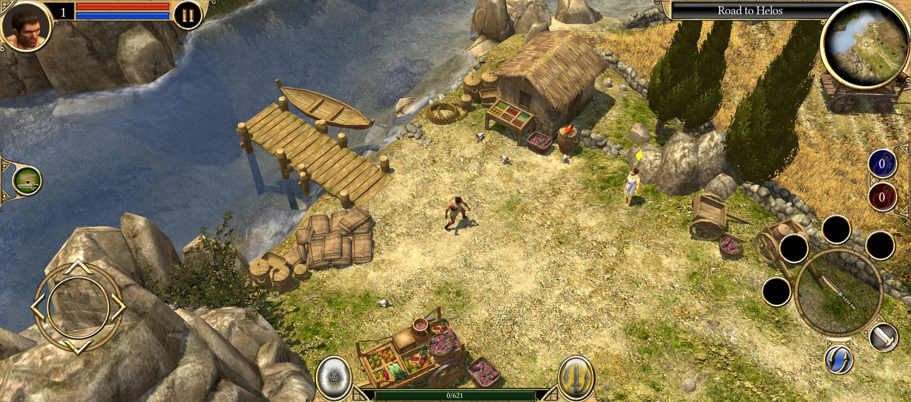
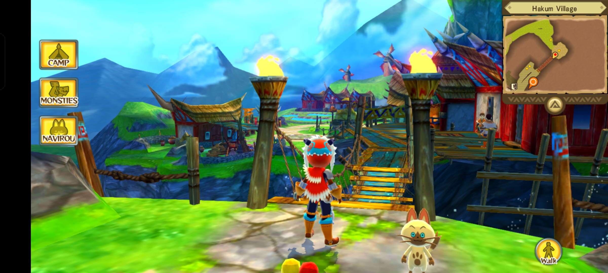
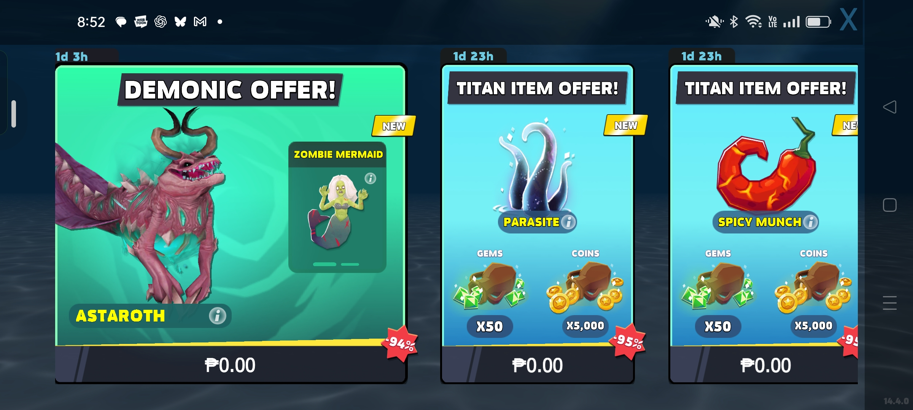
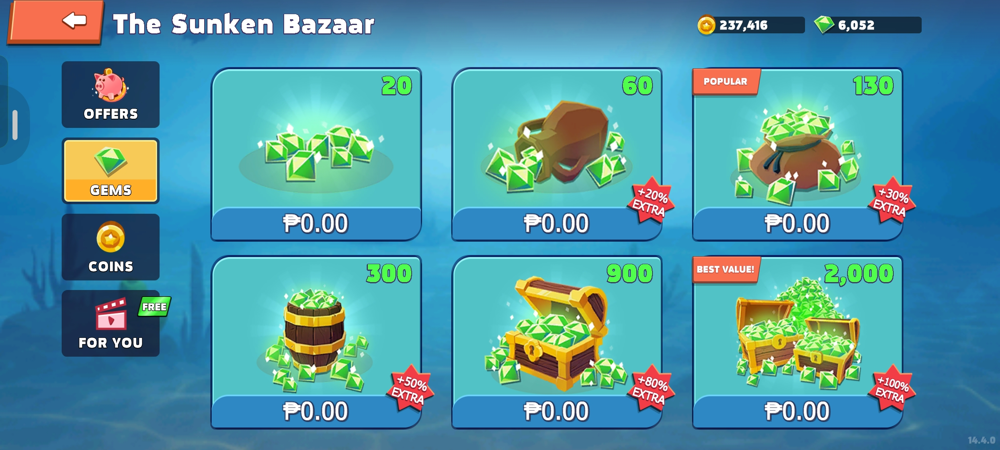
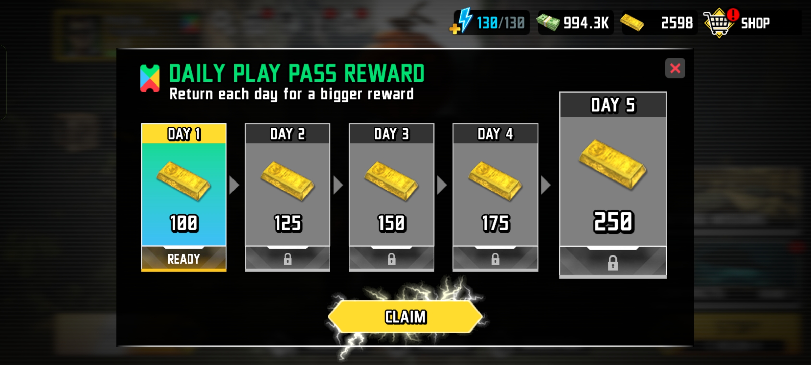
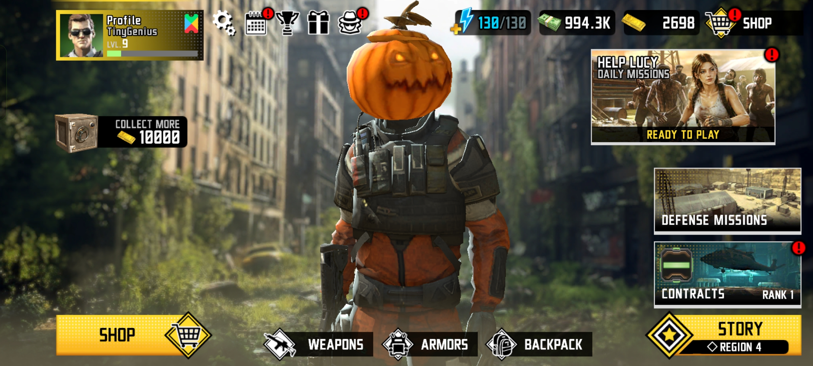
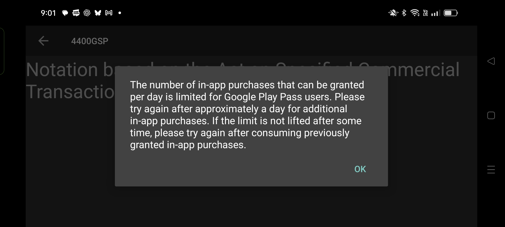
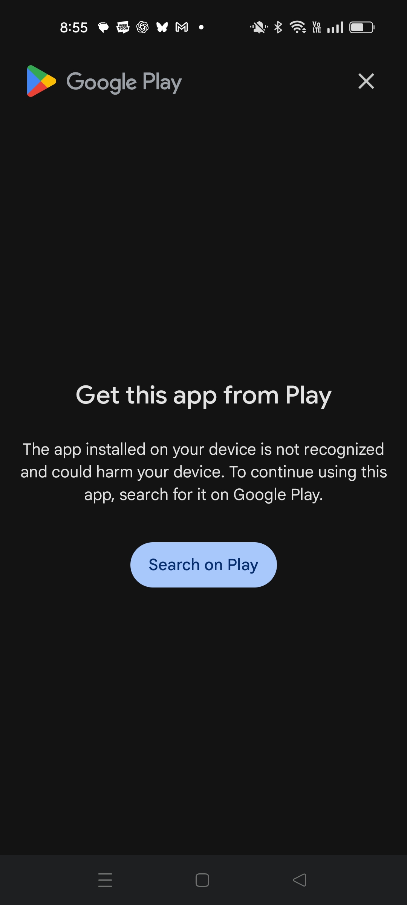

Table of Contents
- Introduction
- Live Service Games
- Store Subscriptions
- Google Play Pass
- Netflix
- Premium Games and Preservation
- Conclusion
Mobile Gaming in 2026
Introduction
When I wrote The missed opportunity of mobile gaming[1], I'd bought an ASUS ROG Phone 7 and wondered what all that power was getting me. Games looked better and ran faster, but much of the Play Store still revolved around live service games and microtransactions. I wanted more complete single-player experiences.
To be fair, I've enjoyed some of those live service games. I just don't always want another event, season, or purchase waiting around the corner. Sometimes I want to buy a game, finish its story, and return whenever I feel like it.
I did find worthwhile PC and console ports and games made specifically for mobile. Some worked offline, although even a single-player game can require a login.
Now it's 2026, and I've found more games worth talking about and spent more time with subscriptions. I've also run into another frustration: enjoying a game today doesn't always mean I can return to it later.
Live Service Games
I'm looking at Android and Google Play here in the Philippines. I don't own an iPhone, so these are the games available on the phone I use.
Live service games are still the norm among the leading free-to-play titles here. In the Philippine chart snapshot from September 5, 2026[2], Roblox and Mobile Legends: Bang Bang led the free chart, followed by Gangstar Mirage City: Online. Roblox, Mobile Legends, and Clash of Clans also topped the grossing chart, followed by Ragnarok: The New World and RF ONLINE NEXT.
It feels familiar. That snapshot doesn't measure growth, but ongoing online games clearly haven't been pushed aside. New arrivals such as Gangstar Mirage City: Online[3] follow the same approach: it entered its regional soft launch in August 2026 as a free-to-play multiplayer game, published by Level Infinite under license from Gameloft.
I've also been looking at simpler free games. Block Blast![4] offers offline single-player play alongside ads and in-app purchases. Sometimes beating my own score is enough; purchases don't automatically mean a game needs a multiplayer server.
I'd rather pay to remove ads or buy an optional cosmetic than feel pushed into spending to keep enjoying a game. Those options vary, though. A small-looking game isn't automatically indie or harmless with its purchases.
The paid chart interests me more. In the same September snapshot[2], Minecraft was first and LIMBO second. Stardew Valley, Terraria, Geometry Dash, Grand Theft Auto: San Andreas, and Balatro also appeared in the top 25.
Not every paid game is indie, but there's a welcome independent presence. LIMBO is from Playdead, and Stardew Valley began as a solo project and is self-published by ConcernedApe[5]. These are the kinds of games I wanted more of.
Some are available through subscriptions, too. LIMBO is included in Google Play Pass[6], a service I've spent more time with since the earlier article.
Store Subscriptions
Apple Arcade launched on September 19, 2019[7], offering a curated selection of games for a subscription fee. Google followed on September 23[8], initially launching Play Pass in the United States with apps as well as games.
From here, I want to explore the subscriptions I've personally tried and what they've been like to use.
Google Play Pass
I started using Play Pass early after it became available to me. Some games are still as generous as I remember; others have changed how they deliver the benefits.
The subscription covers games in Google's selected catalog, removes ads, and unlocks included in-app content. Developers can express interest in joining[9] and earn through the program.
Titan Quest was one of the games that made the subscription useful to me. I'd already bought it and the earlier DLCs when Play Pass let me add Eternal Embers without paying separately. The game's listing[10] shows Play Pass access and lists Eternal Embers among its expansions.

I had a similar experience with Cytus II[11]. I remember buying the base game on sale for around ₱100, then getting the additional song packs available to me through Play Pass. That has remained a useful benefit even though I already owned the game.
Of course, those extras were covered by my subscription. I hadn't bought permanent copies of them.
Monster Hunter Stories kept working on my older phone after it stopped showing up as included with Play Pass for me. But I couldn't install it through the subscription on my ROG Phone. I'd have to buy it separately there.

I was glad the old installation still ran, though Google only allows temporary continued access to paid games leaving Play Pass[12] before requiring a purchase. Free games can keep working while ads and paid items return.
When I first started using Play Pass, most of the games I tried with in-app purchases handled the benefits pretty simply. The usual shop was still there, but the prices became zero. I could claim the packs straight away, with the subscription covering what would otherwise have been another purchase.
Hungry Shark Evolution[13] still feels like that earlier Play Pass experience to me. In the version I play, the bundles and gem packs still show ₱0.00, ready to claim without another payment. That generosity hasn't really changed: the shop still lets me pick up resources directly, instead of working through a separate reward system to get them.


It almost feels like playing as a whale, someone who spends unusually large amounts on in-game purchases, though that doesn't necessarily mean they're wealthy. I get to try those benefits without paying for each pack. It's amusingly generous, but getting resources so easily takes some satisfaction out of progressing.
Some games I've played have since added more pacing. Zombie Sniper War 3 - Fire FPS[14] used to have zero-priced purchases in the version I remember. Now I get daily gold rewards and a vault to work toward, claiming its reward without another purchase once it's ready.


I actually prefer that balance. The benefits are generous without making me feel quite so overpowered, and there's something left to work toward. I keep enjoying the game. I've also encountered a game with a daily limit on the in-app purchases Play Pass users could claim.

It depends on the game and version. Hungry Shark Evolution and Zombie Sniper War 3 also advertise offline play, despite their currencies and purchase systems.
Finding Subnautica[15] included is impressive! There's also Broken Sword: Reforged[16], a remaster of the original Shadow of the Templars adventure. Both currently list Play Pass access and give me more to explore alongside the smaller games.
I have limited patience for games that make progress frustrating and then sell the solution. I remember that feeling in Dungeon Hunter 4 and 5: reaching a difficult point, repeating earlier levels, and chasing the upgrades or bonuses I needed to continue. After a while, I'd rather uninstall and play something else.
Play Pass has often reduced that pressure. I still want a challenge, but I don't want every obstacle to feel like another attempt to get me to spend.
I'll also try games through the subscription that I wouldn't have bought individually. With Google paying recurring revenue based on how subscribers value the content[9], developers get another way to earn and reach players who might otherwise pass their game by.
Play Pass offers are separate discounts for selected games outside the catalog. They vary by account and region and refresh weekly[17], with the Philippines among the supported regions.
Some early Stumble Guys discounts I received were around ₱150, enough to cover an eligible skin costing less than that. A zero checkout felt like being given spending money, although it was a purchase discount, with no cash or leftover balance to keep.
My offers now include deals like 50% off with a maximum saving. I enjoyed the older promotions, but the games and expansions are still why I use Play Pass.
Netflix
Netflix getting into games didn't surprise me. I'd tried its interactive shows, including Carmen Sandiego: To Steal or Not to Steal[18], the 2020 special that let you choose what happened next. The animated series had already brought Carmen back in 2019[19], and I was curious where Netflix would take this.
Its mobile games arrived in November 2021 with five titles[20]. I tried the service while the library was small and have watched it change. Unfortunately, games can leave as well as arrive.
The GTA trilogy particularly excited me. GTA III, Vice City, and San Andreas: The Definitive Edition arrived in December 2023[21], about two years into the service. GTA III and Vice City left in late 2024, while San Andreas stayed roughly another year before its announced December 2025 departure[22].
I still enjoy loading a completed GTA save and roaming around with everything I've unlocked. Starting over can be fun when I choose to. Being forced to repeat hours just to reach an unfinished part of the story is another matter.
Netflix supports cloud saves for some games; others save locally. Its save-data help page[23] says supported cloud saves work across devices with the same account and profile, but progress doesn't transfer between Netflix editions and separately published versions.
So buying the standalone Google Play edition doesn't automatically let me continue. Without a supported transfer, I'm back at the beginning. The save needn't be deleted; losing access to the version that reads it is enough.
Red Dead Redemption is currently in Netflix's mobile catalog[24]. If it left while I was halfway through, I'd want to buy another edition and continue. There's no announced departure I'm referring to here, but that possibility makes me hesitate before investing hours.
Then there's Poinpy: aim a jump, bounce upward, collect fruit, and try for one more run. It launched on Netflix in June 2022[25], later left, and returned outside the service in July 2026[26]. Devolver Digital's current Google Play release[27] is free, without ads or required purchases, and has optional developer tips.
I'm glad it's back, but the progress I built up in the Netflix version didn't come with me. Downloading it again was easy enough; returning to where I'd left off wasn't. Having to begin again takes some of the excitement out of getting the game back.
Netflix also has Blood Line: A Rebel Moon Game[28], The Queen's Gambit Chess[29], and Squid Game: Unleashed[30]. I hope their connections to its shows and films encourage continued support, though that doesn't promise a permanent place in the catalog. Even with The Queen's Gambit Chess's cloud saves, I'd want to keep my progress usable if access changed.
Removals aren't a deal breaker for me. These games are included with my Netflix membership[24], without a separate game subscription fee, and add real value. But the time I spend playing matters even when the game comes with a service I already use.
Premium Games and Preservation
Tomb Raider, the 2013 reboot, arrived on Android and iOS on February 12, 2026[31]. That's exactly the kind of substantial single-player adventure I wanted more of on mobile.
But I want to keep playing older purchases, too. I enjoyed Square Enix's The Last Remnant on Android, yet I can't access or play it on my newer phone and tablet. Its Google Play listing is still present[32]. I may need an older compatible device to return to my copy.
Android and iOS keep changing. Google's policy for older apps[33] can hide them from new users on newer Android versions; previous users can reinstall on versions the app supports. Apple stopped running 32-bit apps with iOS 11[34], leaving those games needing updates.
I can see how that might favor games with continuing revenue from purchases and live service content. My worry with a one-time port is that it gets a few updates, stops selling much, and gets left behind. It doesn't happen to every premium game, but a finished single-player game shouldn't become unusable because it has no new content to sell me.
I remember getting into games from Gameloft and Com2uS, especially Inotia, and playing Red Alert on my iPad. Those weren't just things to open for a minute while waiting around. They were games I wanted to spend real time with, and returning to some of them feels harder than it should.
At least Inotia 4 is still available and receiving updates[35], and ZENONIA 1 got a PC release on August 31, 2026[36]. I'm glad older mobile games are getting another chance instead of staying tied to the phone someone owned years ago.
I thought there wasn't an emulator for old iOS games, but touchHLE exists[37]. Its community database has working reports for particular Red Alert versions, including an iPad build[38]. I haven't tried those versions, and support is limited to particular games and versions. It's encouraging work, but recovering an old mobile library still isn't a simple, broadly supported official experience.
I've also had a game I previously owned tell me to get it from Google Play again, even though it was still installed. When I checked the store, I couldn't obtain it there.

The prompt says the app isn't recognized and could harm my device. I don't know what triggered it. I just know it sent me back to a store that didn't give me a way to play.
My Steam library has been better for this. I can still download and play my original GTA III, Vice City, and San Andreas purchases despite their removal from sale. I mean the originals, not the Definitive Editions. Steam keeps existing owners' download, installation, and launch access when a game is retired[39].
I still have my older Delta Force purchases on GOG after their removal, too. GOG keeps delisted games in owners' libraries and provides offline installers[40]. That gives me more confidence in buying something I'll revisit years later. It won't restore shut-down servers or guarantee future compatibility, but access to the files is a useful start.
To be fair, mobile stores have protections too. Google Play lets existing users keep using and updating apps their developers unpublish[41], and Apple's App Store Improvements removals leave installed copies functional[42]. Those apply to particular removal cases. Purchase history, store availability, installation, and compatibility are still separate hurdles between owning a game and actually playing it.
I play games to enjoy my time. Replaying a story is fun when I choose to; repeating hours just to get back to where I stopped feels like a chore. That makes me appreciate Trials of Mana's cloud saving[43]. I also remember Battle Chasers: Nightwar[44], which is in Play Pass, letting me manage local saves and upload or sync progress. After the frustration with Netflix, I want that control. A backup won't make incompatible editions share saves, though. I need both my progress and a working copy of the game.
I've even run the PC version of Tomb Raider on my ROG Phone through emulation or compatibility software. It was impressive, but the phone got uncomfortably hot. That isn't how I want to spend a long gaming session.
My phone is about three years old now. It was expensive, and I bought it expecting to use it for a long time. I don't want to replace it just to chase more power, and attaching a fan feels too bulky and uncomfortable. For PC games, I'd usually rather pick up my Steam Deck.
I want native mobile purchases to stay useful on the hardware I already have. New premium ports are encouraging; being able to revisit older ones would make me more willing to keep buying them.
Conclusion
Live service games still dominate mobile gaming, and I can see the appeal in my own playtime. Wild Rift is my most-played game; it's easy to settle on the couch or in bed and enjoy a match. But I've also spent over ten hours in Trials of Mana on Android without finishing it, and around sixteen hours in Titan Quest, with more to come. There is room for both.
What I need changes when I'm travelling. Waiting around on holiday is exactly when I'd like to play, but a poor internet connection can put an online game out of reach. That's where a good offline game earns its place on my phone. Play Pass has given me enough worthwhile games to keep exploring, though paying for a game or subscription doesn't automatically make every title playable offline.
The bigger problem is whether those games will remain playable at all. I want the confidence I've had with my older PC purchases: being able to return years later without depending on the developer to keep selling new content. More ports and subscription revenue help, but they don't settle that problem.
Google and Apple should provide a supported way to keep older purchased games running safely when developer updates stop, whether through a compatibility layer or another preservation approach. That won't bring back a shut-down server, but completed offline games shouldn't be treated as disposable. I want to buy a game knowing that an operating-system update won't casually take it away. Until mobile stores take that seriously, I still can't put the same trust in my mobile library as I do in my PC games.